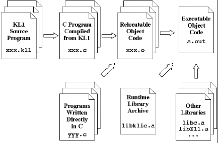
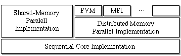
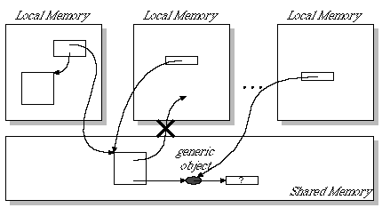
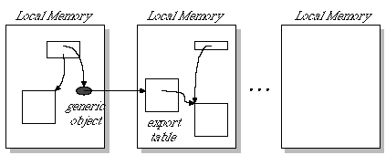
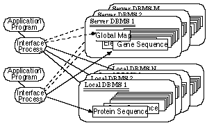

Proc. of FGCS '94, ICOT, Tokyo, December 1994
Parallel Basic Software
Takashi Chikayama
Institute for New Generation Computer Technology
4-28, Mita 1-chome, Minato-ku, Tokyo 108 Japan
chikayama@icot.or.jp
Index
- 0. Abstract
- 1. Introduction
- 2. Evaluation of PIMs
- 3. KLIC: A Portable KL1 Implementation
- 4. Distributed Pool
- 5. Kappa: A Parallel Database Management System
- 6. MGTP: A Bottom-Up Theorem Prover
- 7. Conclusion
- 8. References
- 9. All of this proceedings
Results of the research and development conducted on parallel
basic software in the FGCS follow-on project are reported. The
principal objective of the project is in dissemination of the
technologies developed in the FGCS main project based on concurrent
logic programming.
To reach the objective, the software systems developed in the FGCS
project on parallel inference machines (PIMs) required a more widely
available platform for their broader utilization. PIMs were evaluated
in further depth and a new implementation of a concurrent logic
programming language KL1 for Unix-based systems, KLIC, was developed
based upon the results. Principal basic software systems on PIM were
ported to KLIC, including a parallel database management system Kappa
and a parallel bottom-up theorem prover MGTP.
In the Fifth Generation Computer Systems (FGCS) project conducted
in fiscal years of 1982 through 1992, its parallel inference system
was developed to provide massive processing power with a comfortable
software development environment based on concurrent logic
programming. The parallel inference system consists of parallel
inference machines [7], parallel implementations of a
concurrent logic programming language KL1 upon them and basic software
systems [2][17].
Through development of numerous experimental parallel application
software systems, the parallel inference system was proved to provide
superior processing power and a comfortable environment for efficient
software development. However, the system based on special purpose
hardware had some drawbacks that prevented wider utilization of the
system and application systems on it.
The KL1 language system and basic software systems have been
redesigned and reconstructed on computer systems commonly available in
the market for wider availability and easier access. This paper gives
an overview of the research and development on this area in the FGCS
follow-on project.
1.1 Motivation and Objectives
The parallel inference system built in the FGCS project had the
following drawbacks.
-
PIMs had processing and interprocessor communication hardware
specially devised for concurrent logic programming. It had many
experimental features and consideration on their cost was premature.
This prevented wider availability of the hardware.
-
KL1 was the only high level programming language available on the
system. This prevented utilization of already existing software
written in other languages.
-
The operating system of PIMs had user interface much different from
commonly used operating systems. New users needed to get over this
threshold before enjoying the benefits.
-
Although KL1 was appropriate for description of parallel symbolic
processing programs, it does not feature theorem proving mechanisms
for the full first order logic, and there were needs for higher level
logic programming.
These had been obstacles for broader utilization of the software
developed in the FGCS project.
To get rid of these obstacles, the following had to be provided.
-
An efficient and portable implementation of KL1 on computer hardware
accessible to a wider range of researchers.
-
Language features to allow smooth linkage with already existing
software.
-
User interface consistent with widely used operating systems.
-
A higher level programming language which provides more general
theorem proving capabilities.
1.2 R&D Overview
The requirements described above led us to design a new
implementation of KL1 for Unix-based computer systems, named KLIC.
For higher portability, KLIC uses the language C as an
intermediate language for compilation of KL1 programs, rather than
going down directly to the machine instruction or the microprogram
level as was done with PIMs. However, it is not the only difference
between KLIC and PIM implementations. Many of the design decisions
were remade for different reasons.
Through deeper analyses of the KL1 implementation on PIM with many
experimental parallel application software on it, we could more
quantitatively evaluate various implementation ideas, which influenced
the design of KLIC considerably. The difference of the target
hardware caused redesigning, of course. Some of the implementation
ideas that needed architectural support for efficient processing were
given up and several new ideas were incorporated instead.
Some of other basic software systems also needed nontrivial
redesign for efficiency on general purpose hardware. In case of PIMs,
we designed the whole computer systems from the architecture level
with specially devised communication mechanisms, which the KL1
implementations could use directly. On the other hand, KLIC is for
hardware with communication mechanisms with relatively low throughput
and high latency. More importantly, the operating system layer in
between the hardware and the language implementation incurs
considerable overhead. Thus, some basic software systems had to be
redesigned to reduce the amount and frequency of interprocessor
communication. The distributed pool is a representative example.
The features of KLIC to link with programs in other languages
enabled writing some parts of systems in languages other than KL1 best
suited for their purposes. Most of the conventional languages are
suited only for sequential processing, but KLIC can be used
effectively to combine such sequential parts together into a parallel
system. A parallel database management system Kappa was ported to
KLIC with rewrites in the low-level data handling in the language C.
The language KL1 is a logic programming language but is not meant
to be a theorem prover for the full first order logic. This is also
true for Prolog, but giving up the automatic search feature of Prolog
for better parallel execution control made the language level lower
than Prolog. To fill the enlarged gap between the needs of
application software and the features provided by KL1, a bottom-up
theorem prover MGTP on PIMs was augmented with various features to be
useful as a common tool or a programming language for knowledge
processing and ported onto KLIC.
The rest of the paper gives more detailed descriptions of each R&D
topic. The next section gives an overview of the evaluation effort
made on the KL1 implementation on PIMs. Section 3 describes the outline of the KLIC implementation
of KL1. The distributed pool, a table handling utility optimized for
distributed processing, is described in section 4. Section 5 gives the
outline of the database management system Kappa. R&D on the MGTP
theorem prover is described in section 6. Finally,
a conclusion is given.
Five models of parallel inference machine PIM were built in the
FGCS project. In the FGCS follow-on project, their evaluation through
building experimental parallel application software continued.
In addition, the KL1 implementation on the PIM model-p has been
inspected in more depth after various improvements. The overall
processing speed of the implementation has been more than doubled in
two years of the project period, smoothing out rough edges, making
evaluation of the implementation scheme more reliable.
2.1 Memory Management
All the KL1 implementations on PIMs adopted a reference count
memory management scheme with a single reference count bit in pointers
[4]. Through analyses of the implementation, the
following were found.
-
Management of MRB was made quite efficient with slight architectural
implementation supports.
-
It was effective in allowing destructive updates of singly referenced
data structures without disturbing the pure semantics of the language.
-
Incremental garbage collection using the MRB information was not so
effective; the management cost for free lists was much higher than
simple consecutive allocation. Conventional garbage collection might
outperform it.
2.2 Shared Memory Implementation
The model-p of PIM has clusters with eight processors sharing
memory and a bus, which in turn are connected with a hypercube
network. Thus, its parallel implementation of KL1 has both shared and
distributed memory portions.
Through the analyses of the shared memory portion of the
implementation, we could find the following.
-
Unification on shared memory could be made efficient with a simple
compare and swap primitive.
-
Dynamic automatic load distribution within a shared memory cluster
could be made reasonably efficient [9].
-
Parallel garbage collection was effective but the shared bus becomes
the bottleneck. On the other hand, incremental garbage collection
incurs more false sharing of cache lines and thus heavier bus traffic.
2.3 Distributed Memory Implementation
The distributed memory implementations of KL1 on PIMs adopted a
two level addressing scheme with local and global addresses.
Interprocessor memory management was through weighted reference
counting.
Analyses of the implementation revealed the following.
-
The scheme allowed independent local garbage collection, which was
quite effective in reducing the amount of interprocessor
communication.
-
Reference counting interprocessor garbage collection worked well.
Although this cannot collect garbage forming an interprocessor loop,
this never was a serious problem with application systems tested so
far.
-
Lazy data transfer scheme worked well, but interprocessor
communication delay was considerably large even with architectural
supports. Application programs had to be aware of data locality for
efficient processing. However, for many problems, algorithms to
ensure higher data access locality could be designed without losing
parallelism much.
2.4 KLIC on PIM
The sequential core of KLIC (described in the next section) was
ported to the model-p of PIM. It provided an interesting basis for
comparing two different implementation schemes.
The KLIC implementation showed performance similar to the original
implementation in average. This was unexpected as the original
implementation utilizes the special features of PIM hardware while
KLIC implementation relies only on RISC-like instructions generated by
a C compiler. The following are suspected reasons.
-
The original implementation is ready for shared-memory parallel
processing while the KLIC version is not.
-
The free list management with incremental garbage collection with MRB
in the original implementation is not so effective for sequential
processing.
-
The original implementation uses 64 bits per pointer while KLIC uses
32 bits which resulted in better cache performance.
One point where KLIC was found to perform much inferior to the
original implementation was goal suspension for data-flow
synchronization. KLIC owes its performance to inline code expansion
and thus the object code tends to become large. To alleviate this
problem, compiled code for a program module has only one runtime
subroutine call site commonly used for all the possible execution
interrupts: goal suspension, garbage collection, external interrupt,
etc. This increased the goal suspension cost considerably. However,
it was also found that only few application programs had frequent
suspensions.
Considering performance superiority of KLIC on Unix machines to
other logic programming language systems, the porting proved that the
original KL1 implementation on PIM was reasonably efficient, although
some room remains for improvements.
Further details can be found in [13].
KLIC is a portable implementation of the concurrent logic
programming language KL1. As almost all the software systems
developed in the latter part of the FGCS project were written in KL1,
it was essential to provide its portable implementation for
dissemination of the FGCS technologies.
3.1 Design Policy
KLIC was designed under the following policies.
-
Portability should be put above everything. Only standard features of
the language C and Unix should be used.

-
The system should be made as modular as possible. As a standard for
interprocess communication mechanism is yet to be established,
parallel implementations cannot but have some system dependencies.
Such system dependent modules should be clearly separated for ease of
porting.
-
The interface should conform to the Unix tradition. Systems on Unix
usually provide a collection of relatively small programs in stead of
a single unified environment that most Lisp or Prolog systems provide.
We suspect that this difference has been a psychological obstacle to
wider acceptance of symbolic processing languages. Separation of
development and execution environments also makes production code
smaller.
-
The system should provide a way to smoothly interface with programs in
other languages, specifically the language C. A subroutine interface
is not enough. There should be a way to define data area for C
programs that are maintained within the framework of the memory
management policy of KLIC, including distributed memory cases.
3.2 System Outline
The KLIC system consists of the following.
- KL1 compiler
- that translates programs in KL1 to plain C
programs. Only those features commonly available with most of the C
compilers are used.
- Runtime Libraries
- which are a collection of C subroutines
called from the translated C code.
- C Header Files
- that provide data type definitions and inline
expanded operations used in the translated C code and the runtime
library.
- Compiler Driver
- that controls the compilation and linkage of
KL1 programs.
Compilation of KL1 programs proceeds just like compilation of C
programs except for an additional precompilation step from KL1 to C
(Fig. 1). In a sense, KL1 is a so-called
``fourth generation language''.


Figure 1: Compilation of KL1 Programs
Different runtime libraries are provided for different forms of
usage.
The simplest library provides the basic features and is meant for
the production code. The debugging library is for program development
providing tracing and better error diagnostics in addition to the
basic features.
Another axis that characterizes different libraries is their
parallel processing features. The sequential runtime library does no
parallel processing. The shared memory and distributed memory
parallel runtime libraries provide different parallel processing
schemes. Furthermore, the core algorithm for the distributed memory
implementation is made independent of physical communication
mechanisms. Separate libraries are provided depending on the
lower-level communication mechanisms used. Of course, the users are
expected to install only those libraries of their need (Fig. 2).

Figure 2: Structure of Parallel Implementations
Note that, for all the different purposes, the C code translated
from KL1 programs remains the same. Switching from production code to
debugging code only requires linkage with a different library. This
also makes optimizations on the compiler and the parallel
implementation mechanisms orthogonal, making concurrent system design
and development easier.
To use the same code for different parallel implementation
schemes, some handles are required in the core implementation to
recognize the needs of non-local processing. Explicit operations,
such as designating a goal to be executed on a different worker, are
easily recognized. Shared data accesses are implicit and data access
operations have to provide handles to escape to appropriate runtime
library routines. This is realized by using generic objects
described in section 3.4 .
3.3 Basic Design
Taking into account of the evaluation results of the KL1
implementations on PIMs, differences of the target machine
architectures, and recent research results on logic programming
language implementations, we made the following design decisions for
the core part of the KLIC system.
-
The MRB reference counting scheme is not adopted. Incremental garbage
collection based on MRB was found not to be so effective and, unlike
PIM processors, stock hardware cannot handle many tag bits
efficiently. Also, recent research results suggest most of the
information obtained by dynamic reference counting may be obtained
through static analyses.
-
Only two lowest bits of a pointer word are used for tags. By aligning
pointer words with four or more bytes at word boundaries, these two
tag bits can be used freely. Modern C compilers can combine tag
handling and memory accesses as one load/store instruction with a
small offset. Various builtin data types are realized as generic
objects described below.
-
Rather than compiling one KL1 predicate into one C function, one KL1
program module consisting of a set of related predicates is compiled
into one C function. As most of the modern C compilers are still not
good at interprocedural optimization, size of C functions should be
kept reasonably large.
3.4 Generic Objects
With the KL1 implementations on PIM [7], we
experienced severe difficulties in trying out different parallel
execution schemes, as the schemes were too much integrated into the
system core. This pointed to us a moral that system extensibility and
modifiability should be put above bare efficiency. On the other hand,
as the system is for stock hardware, only a limited number of pointer
tag bits can be handled efficiently. We thus needed some other ways
to distinguish various built-in data types.
Generic objects were introduced to achieve these two objectives at
a time. We borrowed the basic idea of generic objects from AGENTS [11], modified and extended it for KLIC.
The core of the runtime system and compiled codes only know data
types generically called generic objects. Generic objects of
all classes have the same interface; new object classes can be freely
added without changing the system core. For example, copying of
objects on garbage collection is implemented as one of their methods,
and thus the system core do not have to know their physical
representation.
KLIC has three categories of generic objects.
Data Objects are immutable objects without time-dependent states.
Time-independence means that they always look the same from KL1
programs; their physical representation may be modified. For example,
multiversion arrays are data objects that look immutable, but
different versions of an array are represented by a physical array and
linked records of their differences, which are mutated on updates.
With a set of macros provided by the system, users can define an
object class to interface C programs with the KLIC system in an
object-oriented manner. On distributed memory implementations, object
migration can be realized by simply providing a method to encode the
object into a message and a corresponding decoder. Higher level
decisions such as when to migrate objects and lower level
communication procedures are taken care of by the KLIC system.
Consumer Objects are data-driven objects with time-dependent
states. They are associated with an uninstantiated logical variable
and activated by its instantiation. When the unifier recognizes that
the instantiated variable is associated with a consumer object, the
unify method of the object is called. The object performs
the task specified by the given value and, when the value is a
structured data, may associates itself again with a variable inside
the structure. Consumer objects behave exactly like a process
described in KL1 waiting for instantiation of a variable, except that
arbitrary C code can describe its behavior.
Generator Objects are demand-driven objects. They are
also associated with an uninstantiated variable but are activated
on demand of its value. When a variable associated with a
generator object is found to be required during goal suspension
handling, the generate method of the object is called. It
may generate some value immediately to instantiate the associated
variable. Alternatively, it may initiate some activity that will
eventually do it.
In parallel implementations [15][14], non-local references are represented as
generator objects. Their generate methods send a value
fetching message to another worker or read data from shared memory.
No distinction of the above-described three categories is made by
AGENTS; It have no generators and the functionality of consumers is
provided by ports which are data objects. Ports are names
of streams rather than streams themselves.
3.5 Sequential Performance
With careful design of the generated C code, and thanks to
excellent optimization by modern C compilers, the sequential core of
KLIC shows reasonable performance. For a set of standard benchmark
programs that use common features of Prolog and KL1, KLIC runs about
twice as fast as native machine code generated by a widely used Prolog
system, SICStus Prolog [1]. This was reconfirmed
by the two versions of the KL1 to C compiler, one in Prolog and
another in KL1 itself .
While SICStus generates machine code directly, KLIC's code
generation is indirect through C. Deeper analysis of the generated
code revealed that the lack of backtracking benefited KLIC
considerably, but nothing seems to be lost by the indirect code
generation scheme through C, while yielding excellent portability [3].
Note that, with the parallelization scheme of KLIC, this excellent
sequential performance is directly inherited to the single processor
performance of its parallel implementations.
3.6 Shared Memory Implementation
In the shared memory implementation of KLIC, each worker process
has its own local heap area and shares one common heap area in
addition. The local heap may be physically homogeneous with the
shared heap; the logical distinction is to reduce the needs of locking
and to increase access locality. The principal management policy is
to allow pointers from a local heap to the shared heap but not the
reverse.
Data structures are created in a local heap and stay there as far
as no references from different workers are made. Data structures
created for temporary use by one worker live their whole lives within
the local heap.
When a reference is made from a different worker, either by
passing the data structure as an argument of a distributed goal or by
unifying it with a variable in the shared heap, the structure is
copied to the shared heap. Nested structures are copied recursively
down to the bottom in such cases, as they will be indirectly shared.
With the pure semantics of the language, data structures are
read-only and thus need no special care even when they are shared.
Uninstantiated variables in the shared heap call for special
treatment, as their instantiations need locking and copying of the
local data unified with them to the shared heap. Generic objects are
used as handles to access shared variables (Fig. 3).

Figure 3: Shared Memory
Implementation
As garbage collection is an operation without good memory access
locality, garbage collection of the shared heap may easily saturate
the memory bus. By separating local and shared heaps, individual
workers can garbage-collect its own local heap independently and
asynchronously. Also, an interesting research is going on to allow
asynchronous garbage collection of shared heap [14].
3.7 Distributed Memory Implementation
The distributed memory implementation of KLIC inherits its basic
design from the distributed memory implementation on PIMs [10]. Two level addresses, local and global,
are used with address translation tables called export table
(Fig. 4).

Figure 4: Distributed Memory
Implementation
An important difference is that, unlike on PIMs where the
operating system is built on the KL1 language implementation, KLIC
programs are no more than application programs running under operating
systems. Thus, unification failures can be treated as the failure of
the whole program in case of KLIC. This considerably simplified the
distributed unification mechanism [15].
The basic common part of the distributed memory implementation
translates the needs of the KL1 programs into message exchange. Each
concrete implementation then realizes message exchange using some
lower-level mechanism. Portable implementations based on message
passing libraries PVM and MPI, and those based on more system
dependent features such as active messages are being
developed.
3.8 Portability
The sequential core of the KLIC system has been ported to many
Unix-based systems, including systems provided by DEC, NEC, Hitachi,
Omron, SGI, Sony, and Sun. Porting to other Unix-based systems
usually requires only adding a line or two to the configuration
script, if any. The system has also be ported to personal computers
running Linux, MS-DOS and OS2.
The shared memory parallel implementation is running on
shared-memory multiprocessors provided by DEC and Sun at the time this
manuscript is prepared (November 1994). It can be easily ported to
other systems with shared memory features by rewriting only the parts
of the code for shared memory allocation, locking, and cache coherence
(on systems with weak cache coherence semantics).
The distributed memory parallel implementation is currently
running on PVM. It runs on workstations connected via ethernet and is
also reported to run on Intel Paragon. A shared memory implementation
of the distributed memory implementation, which uses the shared memory
for exchanging messages, is also running. An MPI implementation and
implementations using system specific interprocessor communication
features are also going on for AP1000, Cenju3, CM5, SR2001, and some
other systems.
Further details can be found in [6].
The pool is a
table maintenance utility provided by the PIMOS operating system [5] of PIMs. It provides various forms of tables with
arbitrary keys and data and has been extensively used by experimental
parallel application programs on PIMs.
The original pool itself did not run in parallel. All the data is
managed by a single process. This had the following problems.
-
On systems where communication between processing nodes is relatively
slow, access latency becomes problematic.
-
On a highly parallel system with many processes accessing a single
pool, load concentration makes the pool the bottleneck of its
performance.
-
The amount of data stored in a pool is limited by the memory available
for a single processing node, while more memory may be remaining on
other processing nodes.
The access latency problem will become more apparent on systems
where the speed ratio of computation and communication is larger, such
as some of the targets of the KLIC system.
The distributed pool was designed to solve the above problems by
adopting the following schemes.
-
Data are distributed among processing nodes. This alleviates memory
use imbalance.
-
Data accessed are cached by local cache processes. This alleviate
access latency and load imbalance.
To maintain the semantics of the original pool utility, a cache
coherence algorithm was designed. The algorithm is similar to ones
used in keeping physical memory cache consistency except that
communication between caches is asynchronous and thus requires special
care on message crossing and outstripping.
Further details can be found in [16].
Kappa is a parallel database management system (DBMS) for
providing efficient database management facilities for knowledge
information processing applications. Its data management is based on
a nested relational model, in which complex structured data can be
handled much more efficiently than in the conventional relational
model.
Kappa was originally developed as a sequential DBMS and evolved to
a parallel version in the FGCS project. In the FGCS follow-on
project, the parallel version of Kappa was ported onto KLIC.
Kappa consists of a number of element DBMSs running in parallel
managing their own data. Each of the element DBMS has the full
functionality of a DBMS. A global map of relations in element DBMSs
is managed by server DBMSs. The placement of the data can be
configured depending on the amount of and access patterns to the data.
One relation can be divided horizontally into subrelations and
distributed. From the users, the relation still looks as a single
relation logically. For frequently accessed data, copies of one
relations can be distributed for increased access locality (Fig. 5).

Figure 5: An Example
Configration of Kappa
In the KLIC version of Kappa, some lower level data manipulation
portions of Kappa were recoded in the language C directly. This made
its sequential performance close to conventional relational DBMSs on
Unix systems, while retaining its parallel and distributed processing
abilities and added flexibility of its nested relational model.
Further details can be found in [12].
A
theorem prover MGTP was built on PIMs in the FGCS main project. The
proof mechanism of MGTP is through generation of models from a given
axiom set and a theorem to be proved in a bottom-up manner.
In a sense, the system was to supplement KL1 with its more general
logic programming capabilities. The MGTP system showed remarkable
performance through highly parallel processing on PIMs for certain
classes of problems. One of its representative results is an
automatic proof of an open problem in quasi-group theory. However, it
had relative weakness for problems of certain classes when compared to
top-down provers or constraint-based systems. Also, its surface
syntax was not easily accepted as a programming language by
application programmers.
In the FGCS follow-on project, MGTP has been refined and extended
with various features to be useful as a common tool or a programming
language for knowledge processing and also ported onto KLIC.
To overcome its weakness on certain classes of problems, a
technique called non-Horn magic set (NHM) has been
developed. MGTP generates models from a given axiom set to prove
theorems, but literals irrelevant to the proof were generated also.
The NHM technique controls the model generation to suppress case
splits redundant or unnecessary for the proof, improving its
performance remarkably.
To solve constraint satisfaction problems more efficiently, a
version with constraint propagation features, called Constraint MGTP
(CMGTP) has been developed. For higher level description, a method to
translate formulas of modal logic into those of first-order logic has
been developed, so that proofs in modal logic can be handled by MGTP.
For efficiency on systems with slower interprocessor communication, a
version with higher data access locality, called distributed
MGTP has also been developed.
In the course of development of various systems, tools for
visualizing the progress of proofs were also developed. Such tools
has been essential in tuning the proof strategies.
Further details can be found in [8].
The KL1 language system and principal basic software systems have
been successfully ported to the hardware available in the market. By
releasing them as free software, many researchers outside of the
project started to base their research on these basic software
systems. Still wider use of them can be expected in coming years. In
this viewpoint, we may conclude that the research and development of
the basic software systems in the FGCS follow-on project was quite
successful.
On the other hand, there remains much room for improvements.
Further optimizations with static analyses are needed to make the
performance of KLIC programs approach programs directly written in C.
Frequency of interprocessor communication should be reduced through
static analyses. Kappa and MGTP also have rooms for performance
improvements and better user and program interfaces. We expect that a
wider but probably more loosely coupled research community to be
formed after the termination of the FGCS follow-on project to look
into these research topics.
Acknowledgments
Reports on R&D on individual topics are based on the papers by and
discussion with those who carried out research and development on
individual topics, including Koichi Kumon, Hiroyoshi Hatazawa, Tetsuro
Fujise, Masaki Sato, Moto Kawamura and Ryuzo Hasegawa.
- 1
- Mats Carlsson, Johan Wid en,
Johan Andersson, Stefan Andersson, Kent Brootz, Hans Nilsson, and
Thomas Sjoland. SICStus Prolog User's Manual, 1993.
- 2
- Takashi Chikayama. Operating
system PIMOS and kernel language KL1. In Proceedings of
FGCS'92, pages 73-88, Tokyo, Japan, 1992.
- 3
- Takashi Chikayama, Tetsuro Fujise,
and Daigo Sekita. A portable and efficient implementation of kl1. In
Manuel Hermenegildo and Jaan Penjam, editors, Proceedings of
PLILP'94, pages 25-39, Berlin, 1994. Springer-Verlag.
- 4
- Takashi Chikayama and Yasunori
Kimura. Multiple reference management in flat GHC. In
Proceedings of 4th International Conference on Logic Programming,
1987.
- 5
- Takashi Chikayama, Hiroyuki Sato,
and Toshihiko Miyazaki. Overview of the parallel inference machine
operating system (PIMOS). In Proceedings of FGCS'88, pages
230-251, Tokyo, Japan, 1988.
- 6
- Tetsuro Fujise, Takashi
Chikayama, Kazuaki Rokusawa, and Akihiko Nakase. Klic: A portable
implementation of kl1. In Proceedings of FGCS'94, 1994.
- 7
- Atsuhiro Goto, Masatoshi Sato,
Katsuto Nakajima, Kazuo Taki, and Akira Matsumoto. Overview of the
parallel inference machine architecture (PIM). In Proceedings of
FGCS'88, Tokyo, Japan, 1988.
- 8
- Ryuzo Hasegawa. Parallel
theorem provers - MGTP ---. In Proceedings of FGCS'94,
1994.
- 9
- Hiroyoshi
Hatazawa.
Evaluation of Fine-Grain Automatic Load Balancing Method on the Shared
Memory Parallel Machine Journal of Information Processing Society
of Japan, 35(10):2069-2077, October 1994. in Japanese.
- 10
- Nobuyuki Ichiyoshi,
Kazuaki Rokusawa, Katsuto Nakajima, and Yu Inamura. A new external
reference management and distributed unification for KL1. In
Proceedings of FGCS'88, Tokyo, Japan, 1988. Also in New
Generation Computing 7-2, 3 (1990), pp. 159-177.
- 11
- Sverker Janson, Johan
Montelius, Kent Boortz, Per Brand, Bjorn Carlson, Ralph Clarke
Haygood, Bjorn Danielsson, and Seif Haridi. AGENTS user manual. SICS
technical report, Swedish Institute of Computer Science, 1994.
- 12
- Moto Kawamura and Toru
Kawamura. Parallel database management system: Kappa. In
Proceedings of FGCS'94, 1994.
- 13
- Koichi Kumon. Evaluation of
parallel inference machine PIM. In Proceedings of FGCS'94,
1994.
- 14
- Masao Morita, Nobuyuki
Ichiyoshi, and Takashi Chikayama. A shared-memory parallel execution
scheme of KLIC. ICOT technical report, ICOT, 1994.
- 15
- Kazuaki Rokusawa, Akihiko
Nakase, and Takashi Chikayama. Distributed memory implementation of
KLIC. ICOT technical report, ICOT, 1994.
- 16
- Masaki Sato, Masahiko
Yamauchi, and Takashi Chikayama. Distirbuted pool and its
implementation. In Proceedings of FGCS'94, 1994.
- 17
- Kazunori Ueda and Takashi
Chikayama. Design of the kernel language for the parallel inference
machine. The Computer Journal, 33(6):494-500, December
1990.
footnotes
- Actually, we constrained ourselves to a still
smaller subset to enable versions on DOS, OS2 and parallel systems
without full Unix functionalities on processing nodes.
- The Prolog version is a by-product of the earlier
development phase of KLIC.
9 All of this proceedings (Compressed PostScript file) :
Parallel Basic Software (88KB)